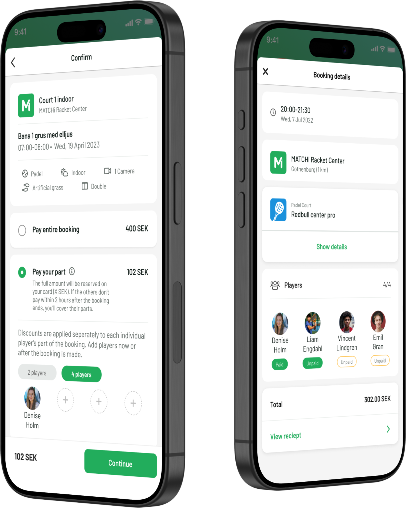
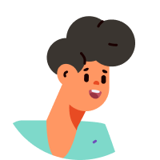
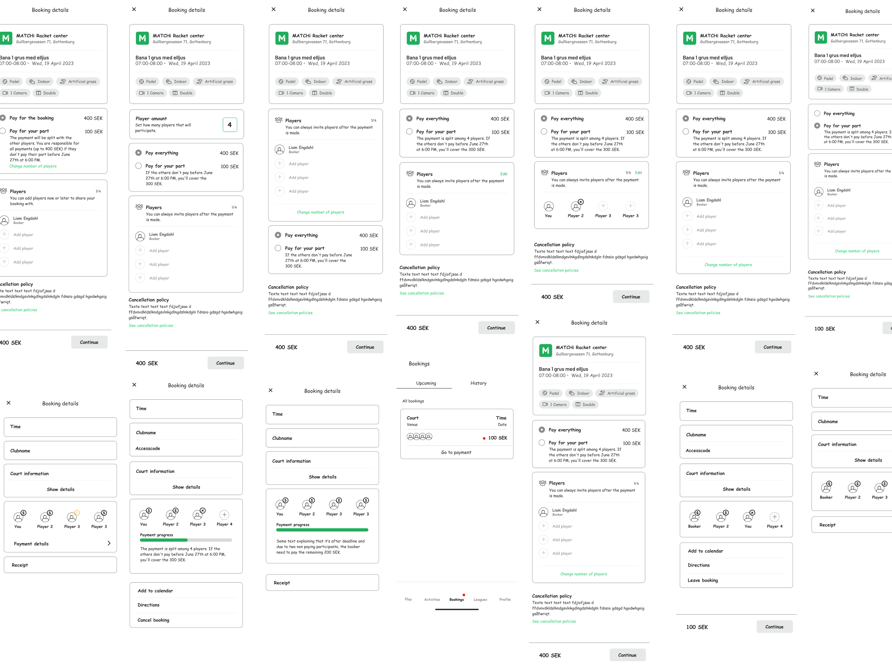
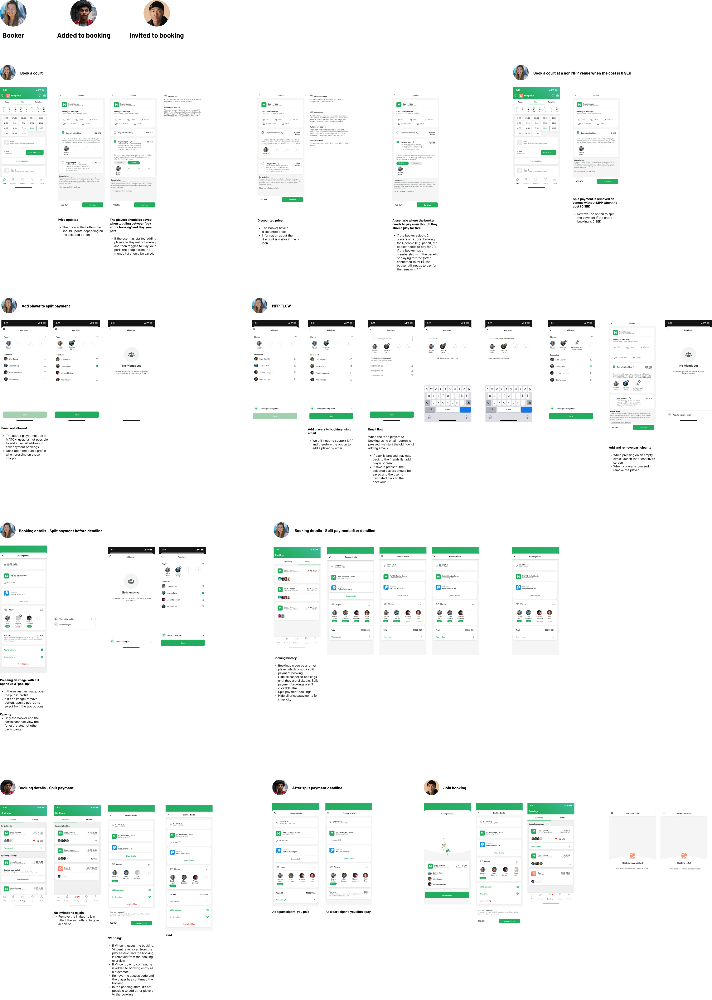
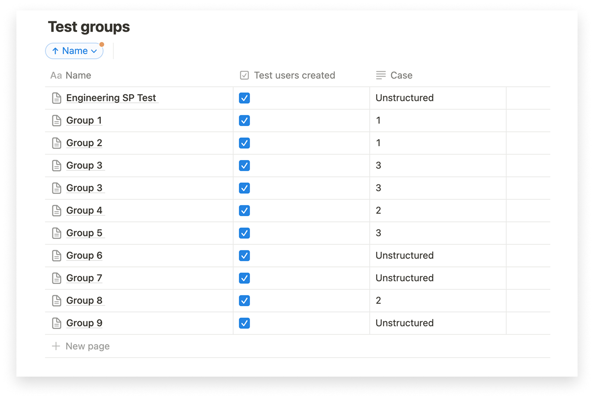
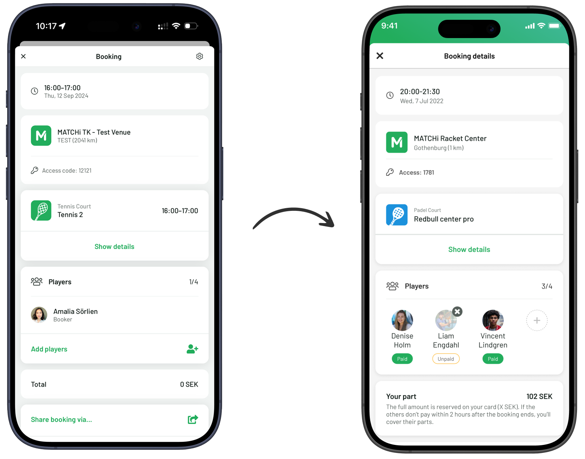
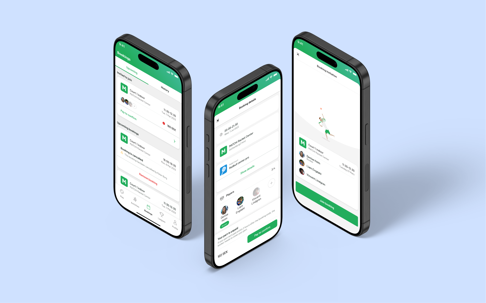
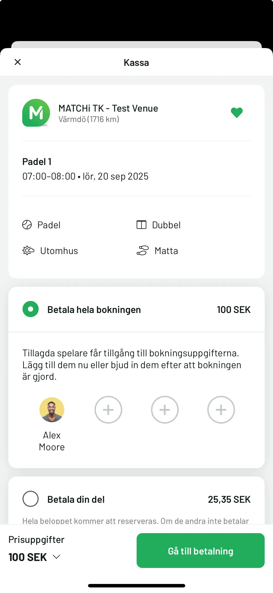
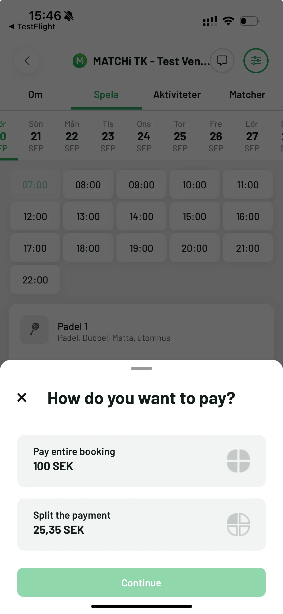
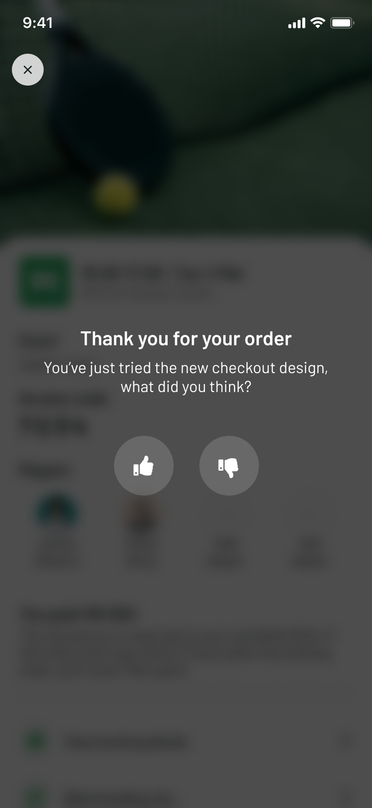

Split Payment
This feature allows bookers to split the cost of a court booking with other participants.

Project overview
Challenge
At MATCHi, a platform focused on racket sports bookings, we identified the need to offer bookers more flexible payment options to enhance the user experience and reduce financial burden. The challenge was to design a solution that allowed bookers to split the payment for their bookings, ensuring clarity in cost distribution and potential financial responsibility if others did not pay their share. One of the key design challenges was to integrate this functionality seamlessly within the existing design to implement a first version as quickly as possible.
My objectives
- Enhance user experience by providing a straightforward payment option for splitting costs in bookings.
- Foster clarity and transparency in payment responsibilities through intuitive design.
- Integrate the split payment feature seamlessly into MATCHi's existing interface to support quick deployment and align with business objectives.
Design process
1 Research
Competitive analysis
User snapshots
2 Conceptualization
Feature statement
Low-fidelity
3 Design
High fidelity
4 Test
Usability testing
01 Research
Competitive analysis
To investigate and understand the feature, I conducted a competitive analysis of three companies in the racket sports booking industry. This analysis aimed to identify key functionalities for splitting the booking cost. By examining how competitors approach similar features, I was able to pinpoint opportunities for differentiation and improvement in our platform, ensuring that MATCHi remains competitive and aligned with user needs.
| Functionality | Company X | Company Y | Company Z |
|---|---|---|---|
| Split payment option | |||
| Payment breakdown display | |||
| Payment reminders | |||
| Payment status tracking | |||
| Visible payment deadline |
User snapshots
To ensure that the split payment feature met real user needs, I engaged in user research and collaborated with colleagues who had deep knowledge of the feature and market insights. I consulted with the commercial team to understand market demand and confirm that the feature would resonate with venues and their needs. Additionally, I spoke with our support team, who regularly collect user feedback, to gain further insight into user pain points and preferences.
To showcase the range of potential users and their needs, I created user snapshots that represent individuals who would benefit from the split payment feature. These snapshots reflect different motivations, behaviors, and challenges, which informed our design decisions.
Emma
The Occasional Organizer
Demographics
52 years old, teacher, plays tennis recreationally.
Behavior
Books courts regularly to play with a close group of friends.
Needs
A streamlined booking system that allows her to share payment responsibilities without handling all costs upfront.
Pain Points
Finds it tedious to remind her playing partners to reimburse her after a booking.
Motivation
Loves organizing games but wants it to be straightforward without financial stress.

Johan
The Competitive Regular
Demographics
35 years old, software engineer, part of a weekly badminton club.
Behavior
Regularly books courts and often plays in mixed-level games, enjoys tracking player skill levels.
Needs
A reliable way to split costs among club members with minimal coordination effort.
Pain Points
Keeping track of payments between club members and chasing people for their share.
Motivation
Wants to focus on playing rather than worrying about logistics.
Lina
The New Enthusiast
Demographics
22 years old, university student, recently picked up padel.
Behavior
Books courts with different friends as she explores the sport, sensitive to budget constraints.
Needs
An easy way to split payments during booking.
Pain Points
Worries about others paying her back after booking.
Motivation
Wants to play without financial uncertainty and values simple, fair solutions.
02 Conceptualization
Feature statement
In the conceptualization phase, I worked closely with the tech lead, product manager, and a commercial representative to create a Feature Statement for the split payment feature. The purpose of this collaborative effort was to clearly define the scope and core functionality, ensuring that everyone was aligned on what needed to be achieved for the MVP.
By creating the feature statement, we ensured that:
- The core functionality was well-defined: It outlined how users could choose between paying the full amount or splitting the costs, and how payment amounts would be calculated and displayed.
- The MVP constraints were clarified: We identified key limitations, such as the feature being available only on mobile devices.
- The business rules were set: We included important rules, such as the service fee structure, cancellation policies, and the handling of promo codes.
Low-fidelity
In this phase, I worked within the constraints of the existing design to ensure the new split payment feature would fit with the current look and feel of the app. This was a request to expedite the technical implementation, meaning I had to align with existing components and minimize changes to the design system, focusing on delivering the MVP as quickly as possible.
To guide the design, I had the user snapshots in mind, which highlighted the varying needs, pain points, and motivations of different user types. This allowed me to ensure the design would be user-centered while maintaining a streamlined technical approach.

03 Design
High fidelity
After iterating on the low-fidelity designs, I moved on to developing the high-fidelity concepts. I took the constraints and technical requirements into account, integrating the split payment feature into the app's design system to maintain consistency and ensure a smooth user experience.
I further refined the design by breaking it down into different user flows to ensure clarity and a seamless experience for all types of users. The design was divided into three distinct flows:
- Booker's flow – This flow outlines the experience from the booker's perspective, showing how they can initiate the split payment and manage the process.
- Added players' flow – This flow represents what players added by the booker will see. It focuses on their part of the interaction, ensuring that they understand their share of the payment and how they can claim their spot in the booking.
- Invited players' flow – For invited players, the flow illustrates how they can join the booking and complete the payment process to confirm their participation.
By dividing the user flows this way, I ensured that the design accounted for the different experiences each user type would have when interacting with the split payment feature. This breakdown also helped me identify potential areas of friction for each flow, ensuring the final design met both user needs and business goals.
The following section will provide an overview of how these flows were organized and handed over to the development team. The final design is presented in a separate section.

04 Test & Release
Usability testing
Due to the nature of the split payment feature, where the functionality requires all users involved in a booking to have access to it, we were unable to conduct usability testing with a limited user group through feature flagging. As a result, the testing had to be conducted internally, with team members acting as both bookers and players.
This approach allowed us to simulate real user interactions within the app and identify any issues with the user flow, functionality, and overall experience. Internal feedback helped us ensure that the feature was intuitive, and we were able to make any necessary adjustments before the final release.

The final design
Following internal testing, the designs were iterated upon based on feedback received, leading to a more refined and effective final solution. The challenge was to incorporate the new split payment feature seamlessly within the current app structure, ensuring a consistent and user-friendly experience.

Some key design enhancements:
- Bigger player photos for a more social vibe
- Payment status shown as a pill for quick clarity
- Payment card updated to include the split payment deadline for better transparency

Final thoughts & next steps
Final thoughts
This project presented a challenge in fitting new content and requirements within the constraints of an existing design. While I saw several opportunities to enhance the user experience beyond the initial requirements, I worked within the scope of the MVP to ensure a swift integration of the split payment feature.
One of the most rewarding aspects of this project was the level of collaboration across departments. The input and support from tech, product, finance, commercial, marketing, and customer support teams were invaluable in shaping the feature.
Next steps
Although there are no ongoing plans to improve the feature at this time, I have identified several areas for refinement. These improvements aim to make the feature clearer for users and reduce support-related errands by addressing common misunderstandings.
I've documented these suggestions, so they're ready to be explored once any team has the bandwidth to focus on further iterations.
What happened after?
Even after split payment launched, I wasn't satisfied with the experience. The new functionality had been layered onto the existing checkout flow, which was functional, but not as clear or intentional as it could be. Rather than waiting for it to be prioritized, I took the initiative myself, pitching the improvements internally until it was picked up as what we call a Small win, a short, focused project outside of our main roadmap work.
My goals were:
- Give users active control over choosing split payment or paying in full, rather than split payment being selected per default
- Remove steps from the checkout that added friction without adding value
- Make the experience cleaner, easier to read, and quicker to understand
The redesign
The new design introduces a step-by-step flow where users actively choose their payment method upfront. This removes ambiguity, prevents accidental selections, and sets clear expectations before the payment is made. The goal with this change was to reduce support cases related to payment confusion.
A key insight from the original split payment project was that users don't like to read so less is more. Therefore, I went with the approach: start with the essentials and only add extra details if users clearly need them, rather than cluttering the design from the start.


Validating the changes
To measure whether the simplified approach was working, we introduced an in-app feedback prompt in the new checkout. Since I deliberately stripped back information, this feedback loop was essential.

We rolled out gradually, starting at 15% of users before increasing incrementally after we receiving positive feedback.
New checkout feedback
0 users shared their feedback